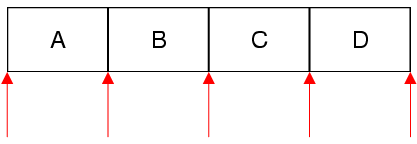

QSetIterator Class
template <typename T> class QSetIteratorThe QSetIterator class provides a Java-style const iterator for QSet. More...
| Header: | #include <QSetIterator> |
| CMake: | find_package(Qt6 REQUIRED COMPONENTS Core) target_link_libraries(mytarget PRIVATE Qt6::Core) |
| qmake: | QT += core |
Public Functions
| QSetIterator(const QSet<T> &set) | |
| bool | findNext(const T &value) |
| bool | hasNext() const |
| const T & | next() |
| const T & | peekNext() const |
| void | toBack() |
| void | toFront() |
| QSetIterator<T> & | operator=(const QSet<T> &container) |
Detailed Description
QSet has both Java-style iterators and STL-style iterators. STL-style iterators are more efficient and should be preferred.
QSetIterator<T> allows you to iterate over a QSet<T>. If you want to modify the set as you iterate over it, use QMutableSetIterator<T> instead.
The constructor takes a QSet as argument. After construction, the iterator is located at the very beginning of the set (before the first item). Here's how to iterate over all the elements sequentially:
QSet<QString> set; ... QSetIterator<QString> i(set); while (i.hasNext()) float f = i.next();
The next() function returns the next item in the set and advances the iterator. Unlike STL-style iterators, Java-style iterators point between items rather than directly at items. The first call to next() advances the iterator to the position between the first and second item, and returns the first item; the second call to next() advances the iterator to the position between the second and third item, returning the second item; and so on.

If you want to find all occurrences of a particular value, use findNext() in a loop.
Multiple iterators can be used on the same set. If the set is modified while a QSetIterator is active, the QSetIterator will continue iterating over the original set, ignoring the modified copy.
See also QMutableSetIterator and QSet::const_iterator.
Member Function Documentation
QSetIterator::QSetIterator(const QSet<T> &set)
Constructs an iterator for traversing set. The iterator is set to be at the front of the set (before the first item).
See also operator=().
QSetIterator<T> &QSetIterator::operator=(const QSet<T> &container)
Makes the iterator operate on set. The iterator is set to be at the front of the set (before the first item).
See also toFront() and toBack().
void QSetIterator::toFront()
Moves the iterator to the front of the container (before the first item).
bool QSetIterator::findNext(const T &value)
Searches for value starting from the current iterator position forward. Returns true if value is found; otherwise returns false.
After the call, if value was found, the iterator is positioned just after the matching item; otherwise, the iterator is positioned at the back of the container.
bool QSetIterator::hasNext() const
Returns true if there is at least one item ahead of the iterator, i.e. the iterator is not at the back of the container; otherwise returns false.
See also next().
const T &QSetIterator::next()
Returns the next item and advances the iterator by one position.
Calling this function on an iterator located at the back of the container leads to undefined results.
See also hasNext() and peekNext().
const T &QSetIterator::peekNext() const
Returns the next item without moving the iterator.
Calling this function on an iterator located at the back of the container leads to undefined results.
See also hasNext() and next().
void QSetIterator::toBack()
Moves the iterator to the back of the container (after the last item).
See also toFront().